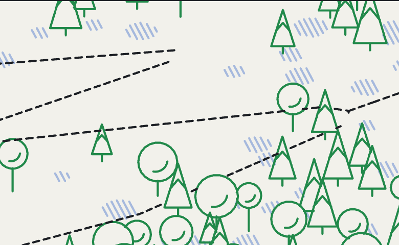
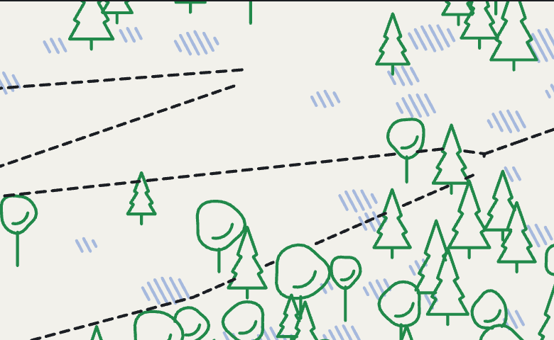
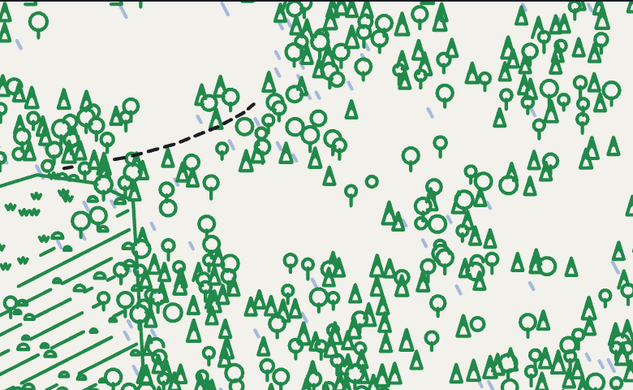
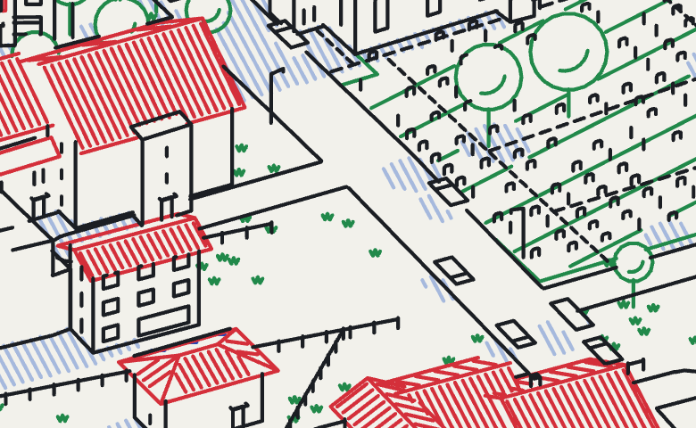

15 November 2026 · Original review · Round 3
Large broadleaf crowns now have smooth, subtly lobed outlines with breadth and shape varied by map position and seed. They remain inside their placement radius. Large conifers use three branch tiers in their outline, replacing the internal chevron. A new crown-detail rule tests print size, including projected conifer height.
Small crowns keep simple circular or triangular outlines without interior marks. This is especially useful for coarse woodland views and broad pens. Palms, cypresses, bushes, tree placement and the grouping introduced in round 2 are unchanged. The depth buffer uses the new crown outlines, so nearby linework can become visible where a crown has narrowed.




Three places at two scales, Detail 1 and a 0.35 mm pen, optional OSM tags off. Time is an estimate, not a measured plotter run. Close views have little change in plotting cost, including small increases where more background becomes visible. At 1:4000, waste falls substantially as tiny interior strokes disappear.
| Sheet | Waste before → after | Estimated time change |
|---|---|---|
| Mollis 1:1000 | 7.0% → 7.0% | +0.1% |
| Mollis 1:4000 | 15.1% → 13.1% | -3.8% |
| Hallstatt 1:1000 | 5.5% → 5.4% | -0.6% |
| Hallstatt 1:4000 | 19.3% → 11.3% | -14.2% |
| Trubschachen 1:1000 | 6.0% → 6.0% | +0.1% |
| Trubschachen 1:4000 | 18.6% → 12.3% | -11.5% |
Before lab report · After lab report (local generated files)
Reviewed all 12 golden sheets, six LOD sheets and the enlarged tree comparisons above, including coarse woodland and garden trees. Golden changes include tree strokes and small visibility differences in ground, shadows, buildings and other nearby features. Object counts and classification remain unchanged.
Regression tests check crown simplification, omission of small interior marks, deterministic variation and containment within the placement radius. The full suite also checks panning stability, setting gates and valid linework. No physical proofs were inspected, nor all 29 presets or every seed, bearing and Detail combination. The stylised tree vocabulary remains intentionally simple; façade repetition and wider composition remain for later rounds.